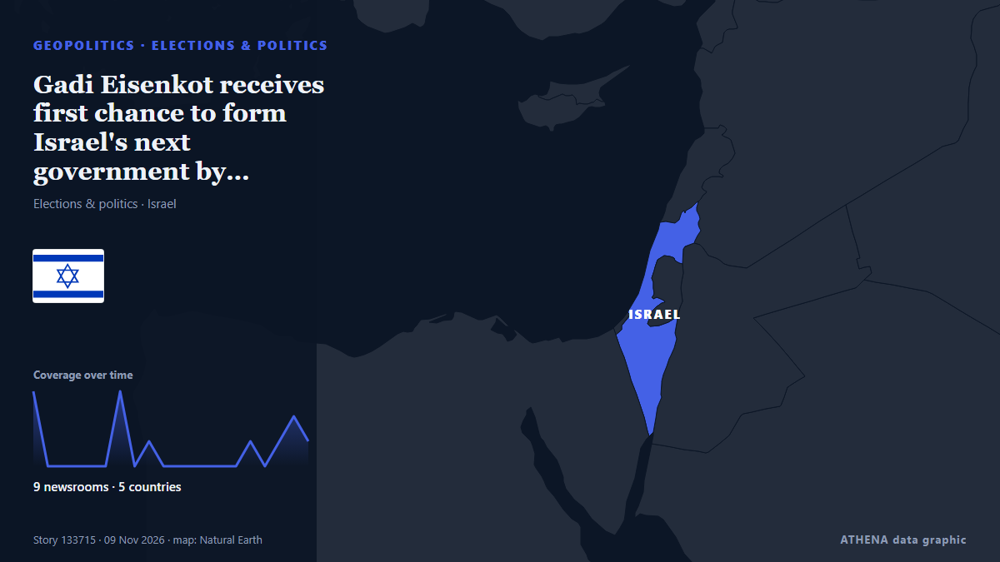

Gadi Eisenkot receives first chance to form Israel's next government by President Herzog

Gadi Eisenkot, accepting the mandate from Israel's president, said he will backtrack on campaign promises on coalition partnerships, and vows 'creative' solutions to fix Israel's political deadlock… from Haaretz (English)
Reported independently by 9 outlets in 5 countries since 4 Nov, first by Al-Monitor; coverage is fading. ATHENA rates the risk moderate (2.7/10), driven mainly by the severity of the harm described and the quality of the evidence. Confidence is 87% (high), with 9 independent outlets corroborating it and an average source reliability of 79%. Outlets by country: Israel (6), United States (2), Singapore (1). Coverage: 4 Nov to 9 Nov, 118 hours.
Why it matters: Security and diplomatic developments can shift alliances, trade and markets well beyond the countries directly involved.
What changed: 4 new reports from 4 outlets in the 24 hours to 9 Nov.
First reported as: Eisenkot expected to secure presidential mandate as Herzog rounds out consultation meetings
How to read this page
- What you are reading
- 9 outlets in 5 countries reported this event. The reports below are listed in the order they appeared; each headline opens the original article. ATHENA writes none of the reports.
- Our reading
- For the record — The reports describe a completed, domestic, commercial or personal matter. We list it so you can see who reported it and when. We are not tracking a risk of wider conflict here.
- How much evidence
- Limited Treat this page as an early report.
After repeats, off-topic items and stale reports are removed, 9 of the 12 listed reports are counted; 100% of the headlines match the event.
- What this does not mean
- ATHENA measures how an event is reported, not whether it is true. This is not a forecast, a judgement on who is right, or advice.
- What would change it
- Reports from other independent outlets showing a different development, or a firm confirmation or denial from an official source.
Reading R2 · refreshed with every update of this page. ATHENA has not yet published a track record for these readings; when it does, it will be linked here.
At a glance
Selected, scored and written by ATHENA's published methodology. No editor intervenes in individual events. How this is produced ›
| 04 Nov 02:30 UTC | 3 |
|---|---|
| 04 Nov 08:30 UTC | 0 |
| 04 Nov 14:30 UTC | 0 |
| 04 Nov 20:30 UTC | 0 |
| 05 Nov 02:30 UTC | 0 |
| 05 Nov 08:30 UTC | 0 |
| 05 Nov 14:30 UTC | 3 |
| 05 Nov 20:30 UTC | 0 |
| 06 Nov 02:30 UTC | 1 |
| 06 Nov 08:30 UTC | 0 |
| 06 Nov 14:30 UTC | 0 |
| 06 Nov 20:30 UTC | 0 |
| 07 Nov 02:30 UTC | 0 |
| 07 Nov 08:30 UTC | 0 |
| 07 Nov 14:30 UTC | 0 |
| 07 Nov 20:30 UTC | 1 |
| 08 Nov 02:30 UTC | 0 |
| 08 Nov 08:30 UTC | 1 |
| 08 Nov 14:30 UTC | 2 |
| 08 Nov 20:30 UTC | 1 |
| 05 Nov 16:30 UTC | 0.0 |
|---|---|
| 05 Nov 20:37 UTC | 1.8 |
| 09 Nov 01:22 UTC | 2.7 |
| 09 Nov 01:22 UTC | 2.7 |
Why these numbers
Importance
Risk
Confidence
The reporting — who reported it, and when
headline as published · opens the original- Al-Monitor · United StatesIsrael's unassuming President Herzog holds keys to next government
- The Straits Times · SingaporeIsrael president opens talks as rivals struggle to form government
- Free Malaysia Today · MalaysiaIsrael’s Herzog faces crucial decision on next government
- The Jerusalem Post · IsraelEisenkot set to receive mandate to form Israeli gov't as Herzog rounds out consultation meetings
- Israel Hayom (English) · Israel67 MKs back Eisenkot for prime minister; calls for 'national emergency government'
- Haaretz (English) · IsraelIsrael's President Herzog says he will announce candidate to form gov't on Sunday
- Middle East Eye · INTIsraeli president Herzog deliberates after Eisenkot receives majority Knesset backing to become prime minister
- Israel Hayom (English) · IsraelHerzog taps Eisenkot to form next government
- Greek Reporter · GreeceEisenkot Gets Mandate to Form Israeli Government as Netanyahu Seeks Unity Deal
- Haaretz (English) · IsraelGadi Eisenkot receives first chance to form Israel's next government by President Herzog
- The Jerusalem Post · Israel'Unconventional steps required': Eisenkot vows to form emergency gov’t as Herzog bestows mandate
- ABC News (International) · United StatesIsrael’s president gives Eisenkot the first chance to form the next government